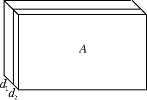

Calore specifico e latente
Propagazione del calore
In generale abbiamo visto che, quando forniamo calore ad un corpo, la sua temperatura aumenta oppure, se siamo in prossimità di un cambiamento di stato, la temperatura non aumenta ma il calore viene utilizzato per indurre il cambiamento di fase della sostanza in esame. Ma quando forniamo calore a un corpo, come avviene la propagazione del calore al suo interno?
Esistono tre modi diversi con cui si propaga il calore:- conduzione: avviene nei solidi. L'energia termica viene trasferita attraverso la vibrazione degli atomi che costituiscono il solido ma non c'è trasferimento di materia.
- convezione: avviene nei fluidi. L'acqua quando si scalda subisce un processo di dilatazione termica: all'aumentare del volume diminuisce la densità, quindi l'acqua calda tende a salire. Le molecole d'acqua si spostano e si mescolano tra loro (moti convettivi),
- irraggiamento: avviene anche in assenza di materia, grazie alla propagazione della radiazione elettromagnetica (ad esempio quella proveniente dal Sole).
Il calore si propaga dal corpo a temperatura più alta a quello a temperatura più bassa in maniera rapida se il materiale ha una elevata conducibilità termica λc (ad esempio nei metalli), in maniera lenta se il materiale ha una bassa conducibilità termica (ad esempio negli isolanti).
Cerchiamo ora di enunciare una formula interessante che può essere utile ai futuri geometri: vogliamo vedere quanto calore attraversa una parete di area A in un certo intervallo di tempo Δt se la differenza di temperatura è pari a ΔT e la parete è costituita da due strati di materiale diverso aventi spessore d1 e d2 rispettivamente, come nella figura sottostante:

Se abbiamo una sola parete di area A, di spessore d e conducibilità termica λc, il calore Q che attraversa la parete è dato da Q = λc · A · ΔT · Δt / d. Se invece abbiamo due pareti di spessori e materiali diversi la formula è leggermente più complicata:
Q = A · ΔT · Δt / (d1 / λc1 + d2 / λc2).
Da questa formula emerge come, fissata una certa differenza di temperatura ΔT, per diminuire la quantità di calore che attraversa la parete dobbiamo aumentare gli spessori d1 e d2 e usare materiali a bassa conducibilità λc, ossia materiali che conducano poco il calore (quali legno, polistirolo oppure sughero).
L'elevata conducibilità termica di materiali come l'acciaio o il marmo fa sì che quando veniamo a contatto con un oggetto di acciaio o di marmo posto a temperatura ambiente, tale oggetto ci sembra più freddo di tutti gli altri oggetti che lo circondano. Infatti il nostro corpo, la cui temperatura è superiore a quella dell'ambiente, cede molto rapidamente parte del suo calore all'acciaio o al marmo e la pelle, privata del calore ceduto, ci procura una immediata sensazione di fresco.